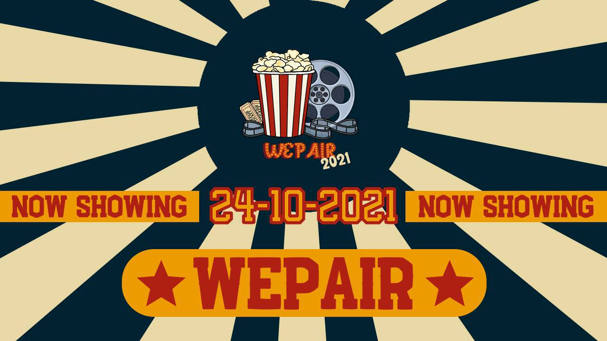
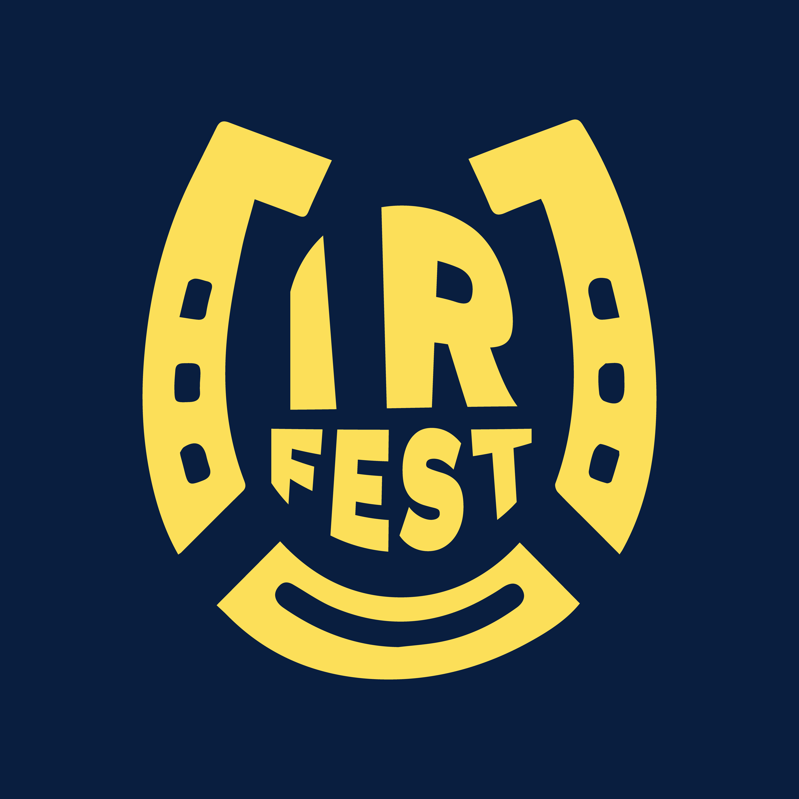

CV Gabriel Yogananda
I am a highly motivated and results-oriented professional with a strong interest in public relations and human resources.
Demonstrates exceptional communication, interpersonal, and organizational skills,
along with a natural leadership ability and a passion for building relationships and
fostering a positive brand or company culture.

Educational Background
- SD Pangudi Luhur St. Timotius Solo (2008-2014)
- SMP PL Bintang Laut Solo (2014-2017)
- SMA Seminari St. Petrus Canisius Mertoyudan (2017-2020)
- SMAN 4 Surakarta (2020-2021)
- Universitas Diponegoro (August 2021-present)
- Undergraduate Student of International Relation
Organization Experience
Bem Fisip Undip

Senat Mahasiswa Fisip Undip

Himpunan Mahasiswa Hubungan Internasional

Working Experience
Intern Staff
- Intern Staff at Dinas Kepemudaan, Olahraga, dan Pariwisata Provinsi Jawa Tengah (September 2024-November 2024)
Volunteering Experience
MUN of International Relation

Welcoming Party of IR

International Relation Festival

Skill and Other Experience
Otw switch IR to Web Developer mwehehehehe
Skill
- A visionary leader with exceptional project management, communication, and teamwork skills
- Highly skilled at writing and often write a paper
Software Skill
- Skilled in using the entire Microsoft Office suite, including Word, Excel, and PowerPoint
offering a strong foundation for creating documents, analyzing data, and developing presentations.
- Skilled in photography and using Adobe Premiere Pro, offering a strong enough foundation for creating a creative content and documenting an events
- Ongoing web developer
Other Experiences
- LKMMPD HI (Pre-Basic International Relations Student Management Skills Training) 2021
- Training Legislative FISIP 2022
- LKMMD Fisip (Basic Student Management Skills Training for Faculty of Social Science and Political Science Students) 2022
- Delegate for UNICEF in Malang International MUN (MAINMUN) 2021
- Delegate for INTERPOL in International Relation of Diponegoro University MUN (IRDUMUN) 2021
- Finalist of Kesmes National Essay Competition 2021 at Faculty of Economics and Business Diponegoro University